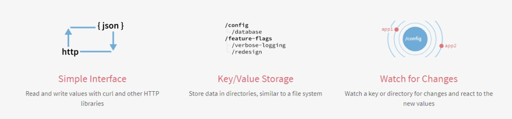

再次整理了一下这个日志收集系统的框，如下图
这次要实现的代码的整体逻辑为：
完整代码地址为: https://github.com/pythonsite/logagent
etcd介绍
高可用的分布式key-value存储，可以用于配置共享和服务发现
类似的项目：zookeeper和consul
开发语言：go
接口：提供restful的接口，使用简单
实现算法：基于raft算法的强一致性，高可用的服务存储目录
etcd的应用场景：
服务发现和服务注册
配置中心(我们实现的日志收集客户端需要用到)
分布式锁
master选举
官网对etcd的有一个非常简明的介绍：

etcd搭建：
下载地址：https://github.com/coreos/etcd/releases/
根据自己的环境下载对应的版本然后启动起来就可以了
启动之后可以通过如下命令验证一下：
[root@localhost etcd-v3.2.18-linux-amd64]# ./etcdctl set name zhaofan
zhaofan
[root@localhost etcd-v3.2.18-linux-amd64]# ./etcdctl get name
zhaofan
[root@localhost etcd-v3.2.18-linux-amd64]#context 介绍和使用
其实这个东西翻译过来就是上下文管理，那么context的作用是做什么，主要有如下两个作用：
控制goroutine的超时
保存上下文数据
通过下面一个简单的例子进行理解：
package main
import (
"fmt"
"time"
"net/http"
"context"
"io/ioutil"
)
type Result struct{
r *http.Response
err error
}
func process(){
ctx,cancel := context.WithTimeout(context.Background(),2*time.Second)
defer cancel()
tr := &http.Transport{}
client := &http.Client{Transport:tr}
c := make(chan Result,1)
req,err := http.NewRequest("GET","http://www.google.com",nil)
if err != nil{
fmt.Println("http request failed,err:",err)
return
}
// 如果请求成功了会将数据存入到管道中
go func(){
resp,err := client.Do(req)
pack := Result{resp,err}
c <- pack
}()
select{
case <- ctx.Done():
tr.CancelRequest(req)
fmt.Println("timeout!")
case res := <-c:
defer res.r.Body.Close()
out,_:= ioutil.ReadAll(res.r.Body)
fmt.Printf("server response:%s",out)
}
return
}
func main() {
process()
}写一个通过context保存上下文，代码例子如：
package main
import (
"github.com/Go-zh/net/context"
"fmt"
)
func add(ctx context.Context,a,b int) int {
traceId := ctx.Value("trace_id").(string)
fmt.Printf("trace_id:%v\",traceId)
return a+b
}
func calc(ctx context.Context,a, b int) int{
traceId := ctx.Value("trace_id").(string)
fmt.Printf("trace_id:%v\",traceId)
//再将ctx传入到add中
return add(ctx,a,b)
}
func main() {
//将ctx传递到calc中
ctx := context.WithValue(context.Background(),"trace_id","123456")
calc(ctx,20,30)
}结合etcd和context使用
关于通过go连接etcd的简单例子：(这里有个小问题需要注意就是etcd的启动方式，默认启动可能会连接不上，尤其你是在虚拟你安装，所以需要通过如下命令启动：
./etcd --listen-client-urls http://0.0.0.0:2371 --advertise-client-urls http://0.0.0.0:2371 --listen-peer-urls http://0.0.0.0:2381
)
package main
import (
etcd_client "github.com/coreos/etcd/clientv3"
"time"
"fmt"
)
func main() {
cli, err := etcd_client.New(etcd_client.Config{
Endpoints:[]string{"192.168.0.118:2371"},
DialTimeout:5*time.Second,
})
if err != nil{
fmt.Println("connect failed,err:",err)
return
}
fmt.Println("connect success")
defer cli.Close()
}下面一个例子是通过连接etcd，存值并取值
package main
import (
"github.com/coreos/etcd/clientv3"
"time"
"fmt"
"context"
)
func main() {
cli,err := clientv3.New(clientv3.Config{
Endpoints:[]string{"192.168.0.118:2371"},
DialTimeout:5*time.Second,
})
if err != nil{
fmt.Println("connect failed,err:",err)
return
}
fmt.Println("connect succ")
defer cli.Close()
ctx,cancel := context.WithTimeout(context.Background(),time.Second)
_,err = cli.Put(ctx,"logagent/conf/","sample_value")
cancel()
if err != nil{
fmt.Println("put failed,err",err)
return
}
ctx, cancel = context.WithTimeout(context.Background(),time.Second)
resp,err := cli.Get(ctx,"logagent/conf/")
cancel()
if err != nil{
fmt.Println("get failed,err:",err)
return
}
for _,ev := range resp.Kvs{
fmt.Printf("%s:%s\",ev.Key,ev.Value)
}
}关于context官网也有一个例子非常有用，用于控制开启的goroutine的退出，代码如下：
package main
import (
"context"
"fmt"
)
func main() {
// gen generates integers in a separate goroutine and
// sends them to the returned channel.
// The callers of gen need to cancel the context once
// they are done consuming generated integers not to leak
// the internal goroutine started by gen.
gen := func(ctx context.Context) <-chan int {
dst := make(chan int)
n := 1
go func() {
for {
select {
case <-ctx.Done():
return // returning not to leak the goroutine
case dst <- n:
n++
}
}
}()
return dst
}
ctx, cancel := context.WithCancel(context.Background())
defer cancel() // cancel when we are finished consuming integers
for n := range gen(ctx) {
fmt.Println(n)
if n == 5 {
break
}
}
}关于官网文档中的WithDeadline演示的代码例子：
package main
import (
"context"
"fmt"
"time"
)
func main() {
d := time.Now().Add(50 * time.Millisecond)
ctx, cancel := context.WithDeadline(context.Background(), d)
// Even though ctx will be expired, it is good practice to call its
// cancelation function in any case. Failure to do so may keep the
// context and its parent alive longer than necessary.
defer cancel()
select {
case <-time.After(1 * time.Second):
fmt.Println("overslept")
case <-ctx.Done():
fmt.Println(ctx.Err())
}
}通过上面的代码有了一个基本的使用，那么如果我们通过etcd来做配置管理，如果配置更改之后，我们如何通知对应的服务器配置更改，通过下面例子演示：
package main
import (
"github.com/coreos/etcd/clientv3"
"time"
"fmt"
"context"
)
func main() {
cli,err := clientv3.New(clientv3.Config{
Endpoints:[]string{"192.168.0.118:2371"},
DialTimeout:5*time.Second,
})
if err != nil {
fmt.Println("connect failed,err:",err)
return
}
defer cli.Close()
// 这里会阻塞
rch := cli.Watch(context.Background(),"logagent/conf/")
for wresp := range rch{
for _,ev := range wresp.Events{
fmt.Printf("%s %q : %q\", ev.Type, ev.Kv.Key, ev.Kv.Value)
}
}
}实现一个kafka的消费者代码的简单例子：
package main
import (
"github.com/Shopify/sarama"
"strings"
"fmt"
"time"
)
func main() {
consumer,err := sarama.NewConsumer(strings.Split("192.168.0.118:9092",","),nil)
if err != nil{
fmt.Println("failed to start consumer:",err)
return
}
partitionList,err := consumer.Partitions("nginx_log")
if err != nil {
fmt.Println("Failed to get the list of partitions:",err)
return
}
fmt.Println(partitionList)
for partition := range partitionList{
pc,err := consumer.ConsumePartition("nginx_log",int32(partition),sarama.OffsetNewest)
if err != nil {
fmt.Printf("failed to start consumer for partition %d:%s\",partition,err)
return
}
defer pc.AsyncClose()
go func(partitionConsumer sarama.PartitionConsumer){
for msg := range pc.Messages(){
fmt.Printf("partition:%d Offset:%d Key:%s Value:%s",msg.Partition,msg.Offset,string(msg.Key),string(msg.Value))
}
}(pc)
}
time.Sleep(time.Hour)
consumer.Close()
}但是上面的代码并不是最佳代码，因为我们最后是通过time.sleep等待goroutine的执行，我们可以更改为通过sync.WaitGroup方式实现
package main
import (
"github.com/Shopify/sarama"
"strings"
"fmt"
"sync"
)
var (
wg sync.WaitGroup
)
func main() {
consumer,err := sarama.NewConsumer(strings.Split("192.168.0.118:9092",","),nil)
if err != nil{
fmt.Println("failed to start consumer:",err)
return
}
partitionList,err := consumer.Partitions("nginx_log")
if err != nil {
fmt.Println("Failed to get the list of partitions:",err)
return
}
fmt.Println(partitionList)
for partition := range partitionList{
pc,err := consumer.ConsumePartition("nginx_log",int32(partition),sarama.OffsetNewest)
if err != nil {
fmt.Printf("failed to start consumer for partition %d:%s\",partition,err)
return
}
defer pc.AsyncClose()
go func(partitionConsumer sarama.PartitionConsumer){
wg.Add(1)
for msg := range partitionConsumer.Messages(){
fmt.Printf("partition:%d Offset:%d Key:%s Value:%s",msg.Partition,msg.Offset,string(msg.Key),string(msg.Value))
}
wg.Done()
}(pc)
}
//time.Sleep(time.Hour)
wg.Wait()
consumer.Close()
}将客户端需要收集的日志信息放到etcd中
关于etcd处理的代码为：
package main
import (
"github.com/coreos/etcd/clientv3"
"time"
"github.com/astaxie/beego/logs"
"context"
"fmt"
)
var Client *clientv3.Client
var logConfChan chan string
// 初始化etcd
func initEtcd(addr []string,keyfmt string,timeout time.Duration)(err error){
var keys []string
for _,ip := range ipArrays{
//keyfmt = /logagent/%s/log_config
keys = append(keys,fmt.Sprintf(keyfmt,ip))
}
logConfChan = make(chan string,10)
logs.Debug("etcd watch key:%v timeout:%v", keys, timeout)
Client,err = clientv3.New(clientv3.Config{
Endpoints:addr,
DialTimeout: timeout,
})
if err != nil{
logs.Error("connect failed,err:%v",err)
return
}
logs.Debug("init etcd success")
waitGroup.Add(1)
for _, key := range keys{
ctx,cancel := context.WithTimeout(context.Background(),2*time.Second)
// 从etcd中获取要收集日志的信息
resp,err := Client.Get(ctx,key)
cancel()
if err != nil {
logs.Warn("get key %s failed,err:%v",key,err)
continue
}
for _, ev := range resp.Kvs{
logs.Debug("%q : %q\", ev.Key, ev.Value)
logConfChan <- string(ev.Value)
}
}
go WatchEtcd(keys)
return
}
func WatchEtcd(keys []string){
// 这里用于检测当需要收集的日志信息更改时及时更新
var watchChans []clientv3.WatchChan
for _,key := range keys{
rch := Client.Watch(context.Background(),key)
watchChans = append(watchChans,rch)
}
for {
for _,watchC := range watchChans{
select{
case wresp := <-watchC:
for _,ev:= range wresp.Events{
logs.Debug("%s %q : %q\", ev.Type, ev.Kv.Key, ev.Kv.Value)
logConfChan <- string(ev.Kv.Value)
}
default:
}
}
time.Sleep(time.Second)
}
waitGroup.Done()
}
func GetLogConf()chan string{
return logConfChan
}同样的这里增加对了限速的处理，毕竟日志收集程序不能影响了当前业务的性能，所以增加了limit.go用于限制速度：
package main
import (
"time"
"sync/atomic"
"github.com/astaxie/beego/logs"
)
type SecondLimit struct {
unixSecond int64
curCount int32
limit int32
}
func NewSecondLimit(limit int32) *SecondLimit {
secLimit := &SecondLimit{
unixSecond:time.Now().Unix(),
curCount:0,
limit:limit,
}
return secLimit
}
func (s *SecondLimit) Add(count int) {
sec := time.Now().Unix()
if sec == s.unixSecond {
atomic.AddInt32(&s.curCount,int32(count))
return
}
atomic.StoreInt64(&s.unixSecond,sec)
atomic.StoreInt32(&s.curCount, int32(count))
}
func (s *SecondLimit) Wait()bool {
for {
sec := time.Now().Unix()
if (sec == atomic.LoadInt64(&s.unixSecond)) && s.curCount == s.limit {
time.Sleep(time.Microsecond)
logs.Debug("limit is running,limit:%d s.curCount:%d",s.limit,s.curCount)
continue
}
if sec != atomic.LoadInt64(&s.unixSecond) {
atomic.StoreInt64(&s.unixSecond,sec)
atomic.StoreInt32(&s.curCount,0)
}
logs.Debug("limit is exited")
return false
}
}小结
这次基本实现了日志收集的前半段的处理，后面将把日志扔到es中，并最终在页面上呈现
来源：
https://www.toutiao.com/a6916833750924018179/
文章转载：IT大咖说
（版权归原作者所有，侵删）


点击下方“阅读原文”查看更多

发表评论 取消回复